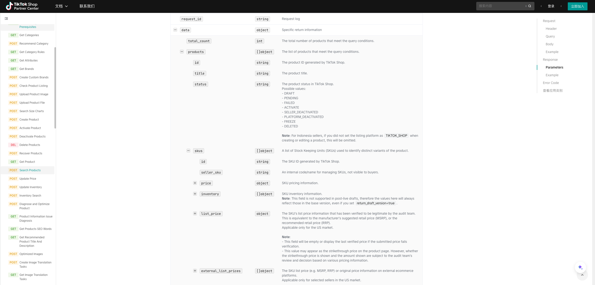
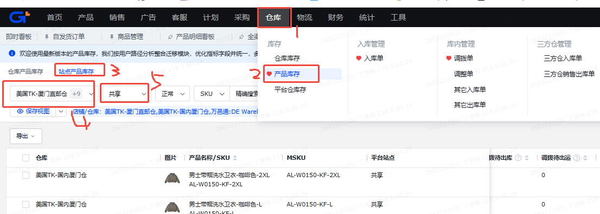
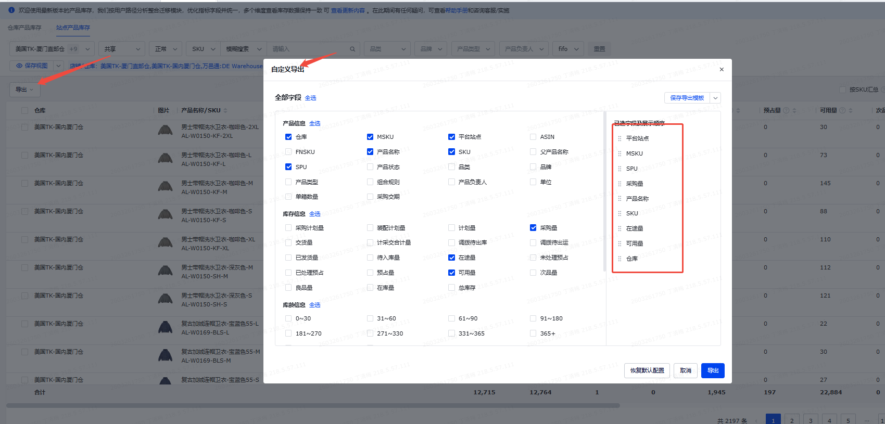

库存检查看板业务计算逻辑说明
差异为负时代表店铺挂得偏少，属于少同步。
一、卡片展示字段计算逻辑
页面顶部统计卡片会随站点、店铺、日期、异常状态等筛选条件变化。SKU 看板展示 SKU 口径卡片，SPU 看板展示 SPU 口径卡片。
| 序号 | 卡片名称 | 适用列表 | 业务说明 | 业务逻辑说明 | 表计算逻辑说明 |
|---|---|---|---|---|---|
| 1 | SKU 总数 / SPU 总数 | SKU / SPU | 当前筛选范围内的对象数。SKU 看库存 SKU 数，SPU 看款式数。 | 每天按当前筛选范围统计对象数量：SKU 视角按店铺 + 库存 SKU 去重； SPU 视角按店铺 + SPU 汇总。 | 表 dws.dws_inventory_stock_check_summary_1d 字段 total_object_cnt；按页面列表类型过滤 view_grain = sku/spu，再按站点/店铺筛选。SKU 店铺行按店铺 + SKU 去重，SPU 店铺行按店铺 + SPU 汇总。 |
| 2 | 海外在库总库存 | SKU / SPU | 海外仓当前可用或在库库存合计。 | 每天按当前筛选范围汇总海外仓已经在库或可用的库存； SKU 与 SPU 视角分别按对应列表层级汇总。 | 表 dws.dws_inventory_stock_check_summary_1d 字段 overseas_on_hand_total_qty；按 view_grain = sku/spu 与站点/店铺过滤。 |
| 3 | 海外在途总库存 | SKU / SPU | 海外方向还在运输或调拨中的库存合计。 | 每天按当前筛选范围汇总海外方向还未入可售仓的库存； 包括三方海外仓在途、FBT 在途和英国退货仓在途。 | 表 dws.dws_inventory_stock_check_summary_1d 字段 overseas_in_transit_total_qty；按 view_grain = sku/spu 与站点/店铺过滤。 |
| 4 | 国内总库存 | SKU / SPU | 国内侧未交、在途、在库库存合计。 | 工厂采购未交量 + 国内交货在途库存 + 国内在库库存； 按当前列表视角汇总展示。 | 表 dws.dws_inventory_stock_check_summary_1d 字段 domestic_total_qty；业务公式为 factory_unfulfilled_qty + domestic_delivery_in_transit_qty + domestic_on_hand_qty。 |
| 5 | FBT 库存 | SKU / SPU | FBT 可用库存 + FBT 在途库存，用来看 FBT 库存占比。 | 积加 FBT 可用库存 + FBT 在途库存； 用于观察 FBT 库存水位和库存占比。 | 表 dws.dws_inventory_stock_check_summary_1d 字段 fbt_inventory_qty；SKU 店铺行来自去重后 jijia_fbt_available_qty + fbt_in_transit_qty；SPU 店铺行来自 dws_inventory_stock_check_spu_1d 汇总。 |
| 6 | 阈值同步异常数 | SKU / SPU | 页面卡片名称沿用“阈值同步异常数”。当前实现中，SKU 统计卡片按“库存阀值未配置”计数； SPU 店铺卡片按异常类型为“阀值问题”计数。 | 沿用页面当前异常口径：SKU 侧统计库存阀值未配置的对象； SPU 侧统计异常类型为阀值问题的对象。 | 页面卡片名称沿用“阈值同步异常数”。当前实现中，SKU 统计卡片按“库存阀值未配置”计数； SPU 店铺卡片按异常类型为“阀值问题”计数。 |
| 7 | 少同步异常数 | SKU / SPU | 店铺侧挂得比系统应该挂出的少的异常对象数。 | 当系统应该同步的库存大于店铺侧实际同步库存时，计入少同步异常； 按当前列表视角去重统计。 | 表 dws.dws_inventory_stock_check_summary_1d 字段 less_sync_abnormal_cnt；来自 sku_abnormal_summary，按 abnormal_type = less_sync 的店铺 + PID + SKU 去重后统计。 |
| 8 | 超卖风险异常数 | SKU / SPU | 店铺侧挂得比系统应该挂出的多且超过阀值的异常对象数。 | 当店铺侧实际同步库存大于系统应该同步库存，并且超过库存阀值时，计入超卖风险异常； 按当前列表视角去重统计。 | 表 dws.dws_inventory_stock_check_summary_1d 字段 oversold_risk_abnormal_cnt；来自 sku_abnormal_summary，按 abnormal_type = oversold_risk 的店铺 + PID + SKU 去重后统计。 |
二、SKU 列表字段计算逻辑
本节按页面 SKU 列表字段顺序说明。表来源：dws.dws_inventory_stock_check_sku_1d；
默认分区过滤：smt = ${currentMonthPre}、sdt = ${currentDatePrev}。输出字段已合并到“表计算逻辑说明”中。
| 序号 | 字段分组 | 列表字段名 | 业务说明 | 业务逻辑说明 | 表计算逻辑说明 |
|---|---|---|---|---|---|
| 1 | 产品基本信息 | 店铺 | 识别这行库存属于哪个店铺，页面筛选和排障的第一层入口。 | （数据源1）取 TikTok 在线商品的店铺名称，用于页面筛选和定位具体店铺。 | 输出字段：storeName。表 dws.dws_inventory_stock_check_sku_1d 字段 store_name；取数过滤 smt = ${currentMonthPre}、sdt = ${currentDatePrev}；DWS 从 sku_source 读取 DWD 当日 SKU 快照后输出。 |
| 2 | 产品基本信息 | SPU | 商品款式层级，用于把多个 PID / SKU 汇总到同一个款式看库存。 | （数据源1）优先取商品档案维护的 SPU，其次取在线商品 / PID 主 SPU 映射，用于把多个 PID / SKU 归到同一款式查看。 | 输出字段：spu。表 dws.dws_inventory_stock_check_sku_1d 字段 spu；取数过滤 smt = ${currentMonthPre}、sdt = ${currentDatePrev}；DWS 从 sku_source 读取 DWD 当日 SKU 快照后输出。 |
| 3 | 产品基本信息 | SPU名称 | SPU 的中文名称，帮助业务快速识别款式。 | （数据源1）优先取商品档案维护的 SPU 名称，其次取在线商品名称，用于识别款式，不参与库存计算。 | 输出字段：spuName。表 dws.dws_inventory_stock_check_sku_1d 字段 spu_name；取数过滤 smt = ${currentMonthPre}、sdt = ${currentDatePrev}；DWS 从 sku_source 读取 DWD 当日 SKU 快照后输出。 |
| 4 | 产品基本信息 | PID | TikTok 商品 ID，用于定位店铺后台的具体商品。 | （数据源1）取 TikTok 在线商品 ID，用于定位店铺后台商品，不参与库存加减。 | 输出字段：pid。表 dws.dws_inventory_stock_check_sku_1d 字段 pid；取数过滤 smt = ${currentMonthPre}、sdt = ${currentDatePrev}；DWS 从 sku_source 读取 DWD 当日 SKU 快照后输出。 |
| 5 | 产品基本信息 | MSKU | 积加侧维护的商品 SKU 编码，通常与官方 seller_sku / skuCode 保持一致。 | （数据源1）取在线商品 SKU 编码，作为积加库存和店铺 SKU 对齐的识别信息。 | 输出字段：msku。表 dws.dws_inventory_stock_check_sku_1d 字段 msku；取数过滤 smt = ${currentMonthPre}、sdt = ${currentDatePrev}；DWS 从 sku_source 读取 DWD 当日 SKU 快照后输出。 |
| 6 | 产品基本信息 | SKU ID | TikTok 官方 SKU ID，用于和官方商品 API 明细对齐。 | （数据源1）取 TikTok 官方 SKU ID，用于和官方商品 SKU 明细对齐。 | 输出字段：skuId。表 dws.dws_inventory_stock_check_sku_1d 字段 sku_id；取数过滤 smt = ${currentMonthPre}、sdt = ${currentDatePrev}；DWS 从 sku_source 读取 DWD 当日 SKU 快照后输出。 |
| 7 | 产品基本信息 | 库存SKU | 库存 SKU，库存共享与同步判断主要按这个 SKU 收敛。 | （数据源1）取在线商品库存 SKU，是库存共享、仓库库存和同步差异判断的主要识别字段。 | 输出字段：inventorySku。表 dws.dws_inventory_stock_check_sku_1d 字段 inventory_sku；取数过滤 smt = ${currentMonthPre}、sdt = ${currentDatePrev}；DWS 从 sku_source 读取 DWD 当日 SKU 快照后输出。 |
| 8 | 产品基本信息 | 库存SKU名称 | 库存 SKU 对应的中文商品名称。 | （数据源1）取在线商品名称 / 标题，用于识别商品，不参与库存计算。 | 输出字段：inventorySkuName。表 dws.dws_inventory_stock_check_sku_1d 字段 inventory_sku_name；取数过滤 smt = ${currentMonthPre}、sdt = ${currentDatePrev}；DWS 从 sku_source 读取 DWD 当日 SKU 快照后输出。 |
| 9 | 总库存 | 总库存 | 当前可看作这行商品的全部库存水位。 | 总国内库存（序号16） + 海外在途总量（序号23） + 海外在库总库存（序号31）。 | 输出字段：totalInventoryQty。DWS 字段 total_inventory_qty，由 DWD 当日 SKU 快照透传；业务公式为总库存 = 国内总库存（序号16）+ 海外在途总量（序号23）+ 海外在库总库存（序号31）。 |
| 10 | 总库存 | 总在途库存 | 还在路上或未交付、暂不能立即售卖的库存。 | 总国内库存（序号16） - 国内在库库存（序号20） + 海外在途总量（序号23）。 | 输出字段：totalInTransitQty。DWS 字段 total_in_transit_qty，由 DWD 当日 SKU 快照透传；业务公式为在途类库存合计，可由总国内库存（序号16）扣国内在库（序号20）后加海外在途总量（序号23）理解。 |
| 11 | 总库存 | 总可用库存 | 当前已经在仓、理论上可用于销售或同步的库存。 | 国内在库库存（序号20） + 海外在库总库存（序号31）。 | 输出字段：totalAvailableQty。DWS 字段 total_available_qty，由 DWD 当日 SKU 快照透传；业务公式为国内在库库存（序号20）+ 海外在库总库存（序号31）。 |
| 12 | 总库存 | 积加FBT可用库存占比 | 看 FBT 可用库存占全部可用库存的比例。 | 积加 FBT 可用库存（序号37）/ 总可用库存（序号11）； 分母为 0 时展示 0。 | 输出字段：fbtAvailableQtyRatio。DWS 字段 fbt_available_qty_ratio = jijia_fbt_available_qty / total_available_qty；引用序号37、11； 分母为 0 时返回 0。 |
| 13 | 总库存 | 积加FBT总库存占比 | 看 FBT 可用 + 在途占全部库存的比例。 | （ 积加 FBT 可用库存（序号37）+ FBT 在途量（序号29））/ 总库存（序号9）； 分母为 0 时展示 0。 | 输出字段：fbtTotalInventoryQtyRatio。DWS 字段 fbt_total_inventory_qty_ratio = (jijia_fbt_available_qty + fbt_in_transit_qty) / total_inventory_qty；引用序号37、29、9； 分母为 0 时返回 0。 |
| 14 | 总库存 | 店铺FBT可用库存占比 | 看店铺侧 FBT 挂出的库存占可用库存比例。 | 店铺侧 FBT 可用库存（序号48）/ 总可用库存（序号11）； 分母为 0 时展示 0。 | 输出字段：storeFbtAvailableQtyRatio。DWS 字段 store_fbt_available_qty_ratio = store_synced_fbt_qty / total_available_qty；引用序号48、11； 分母为 0 时返回 0。 |
| 15 | 总库存 | 店铺FBT总库存占比 | 看店铺侧 FBT 挂出 + FBT 在途占全部库存比例。 | （店铺侧 FBT 可用库存（序号48）+ FBT 在途量（序号29）） / 总库存（序号9）； 分母为 0 时展示 0。 | 输出字段：storeFbtTotalInventoryQtyRatio。DWS 字段 store_fbt_total_inventory_qty_ratio = (store_synced_fbt_qty + fbt_in_transit_qty) / total_inventory_qty；引用序号48、29、9； 分母为 0 时返回 0。 |
| 16 | 国内库存 | 总国内库存 | 国内侧库存总量，包括未交、在途和已在库。 | 工厂采购未交量（序号18） + 国内交货在途库存（序号19） + 国内在库库存（序号20）。 | 输出字段：totalDomesticInventoryQty。DWS 字段 domestic_total_qty，由 DWD 快照透传；业务公式为工厂采购未交量（序号18）+ 国内交货在途库存（序号19）+ 国内在库库存（序号20）。 |
| 17 | 国内库存 | 采购在途库存 | 采购和国内在途补给量。 | （数据源2）美国TK-厦门直邮仓、美国TK-国内厦门仓、美国TK-英区直邮仓的采购未交量 + 国内交货在途库存。 | 输出字段：purchaseInTransitQty。DWS 字段 purchase_in_transit_qty，由 DWD 快照透传；可理解为采购在途相关库存。 |
| 18 | 国内库存 | 工厂采购未交量 | 供应端已经采购但工厂还未交的数量。 | （数据源2）美国TK-厦门直邮仓、美国TK-国内厦门仓、美国TK-英区直邮仓的采购未交量汇总，参与总国内库存（序号16）。 | 输出字段：factoryPurchaseUnshippedQty。DWS 字段 factory_unfulfilled_qty，由 DWD 快照透传。 |
| 19 | 国内库存 | 国内交货在途库存 | 国内交货或调拨过程中的在途库存。 | （数据源2）美国TK-厦门直邮仓、美国TK-国内厦门仓、美国TK-英区直邮仓的国内交货在途库存汇总，参与总国内库存（序号16）和总在途库存（序号10）。 | 输出字段：domesticDeliveryInTransitQty。DWS 字段 domestic_delivery_in_transit_qty，由 DWD 快照透传。 |
| 20 | 国内库存 | 国内在库库存 | 国内仓当前可用库存。 | （数据源2）美国TK-厦门直邮仓、美国TK-国内厦门仓、美国TK-英区直邮仓的可用库存汇总，参与总国内库存（序号16）和总可用库存（序号11）。 | 输出字段：domesticOnHandQty。DWS 字段 domestic_on_hand_qty，由 DWD 快照透传。 |
| 21 | 国内库存 | 国内-厦门仓库存 | 厦门相关国内仓当前可用库存。 | （数据源2）美国TK-厦门直邮仓 + 美国TK-国内厦门仓的可用库存，参与美国TK厦门直邮仓同步差异（序号51）。 | 输出字段：jijiaXiamenAvailableQty。表 dws.dws_inventory_stock_check_sku_1d 字段 jijia_xiamen_available_qty；取数过滤 smt = ${currentMonthPre}、sdt = ${currentDatePrev}；DWS 从 sku_source 读取 DWD 当日 SKU 快照后输出。 |
| 22 | 国内库存 | 国内-英国仓库存 | 英国直邮相关国内仓当前可用库存。 | （数据源2）美国TK-英区直邮仓的可用库存，用于识别英国直邮库存水位。 | 输出字段：jijiaUkDirectAvailableQty。表 dws.dws_inventory_stock_check_sku_1d 字段 jijia_uk_direct_available_qty；取数过滤 smt = ${currentMonthPre}、sdt = ${currentDatePrev}；DWS 从 sku_source 读取 DWD 当日 SKU 快照后输出。 |
| 23 | 海外在途库存 | 海外在途总量 | 海外方向还在运输、调拨或 FBT 在途中的库存总量。 | 三方仓在途量（序号24） + FBT在途量（序号29） + 英国退货仓在途量（序号30）。 | 输出字段：overseaInTransitTotalQty。DWS 字段 overseas_in_transit_total_qty，由 DWD 快照透传；业务公式为三方仓在途（序号24）+ USKY3（序号25）+ USWC2（序号26）+ USWC（序号27）+ 谷仓美西（序号28）+ FBT 在途（序号29）+ 英国退货仓在途（序号30）。 |
| 24 | 海外在途库存 | 三方仓在途量 | 三方海外仓在途合计。 | 万邑通USKY3在途（序号25） + 万邑通USWC2在途（序号26） + 万邑通USWC在途（序号27） + 美国谷仓:美西仓库在途（序号28）。 | 输出字段：thirdWarehouseInTransitQty。DWS 字段 third_warehouse_in_transit_qty，由 DWD 快照透传；业务公式为万邑通和谷仓类三方仓在途合计，引用序号25-28。 |
| 25 | 海外在途库存 | 万邑通USKY3在途 | 万邑通 USKY3 仓在途数量。 | （数据源2）万邑通 USKY3 仓的出库待处理、发货待处理和在途库存合计，参与三方仓在途量（序号24）和海外在途总量（序号23）。 | 输出字段：winitUsky3InTransitQty。表 dws.dws_inventory_stock_check_sku_1d 字段 winit_usky3_in_transit_qty；取数过滤 smt = ${currentMonthPre}、sdt = ${currentDatePrev}；DWS 从 sku_source 读取 DWD 当日 SKU 快照后输出。 |
| 26 | 海外在途库存 | 万邑通USWC2在途 | 万邑通 USWC2 仓在途数量。 | （数据源2）万邑通 USWC2 仓的出库待处理、发货待处理和在途库存合计，参与三方仓在途量（序号24）和海外在途总量（序号23）。 | 输出字段：winitUswc2InTransitQty。表 dws.dws_inventory_stock_check_sku_1d 字段 winit_uswc2_in_transit_qty；取数过滤 smt = ${currentMonthPre}、sdt = ${currentDatePrev}；DWS 从 sku_source 读取 DWD 当日 SKU 快照后输出。 |
| 27 | 海外在途库存 | 万邑通USWC在途 | 万邑通 USWC 仓在途数量。 | （数据源2）万邑通 USWC 仓的出库待处理、发货待处理和在途库存合计，参与三方仓在途量（序号24）和海外在途总量（序号23）。 | 输出字段：winitUswcInTransitQty。表 dws.dws_inventory_stock_check_sku_1d 字段 winit_uswc_in_transit_qty；取数过滤 smt = ${currentMonthPre}、sdt = ${currentDatePrev}；DWS 从 sku_source 读取 DWD 当日 SKU 快照后输出。 |
| 28 | 海外在途库存 | 美国谷仓:美西仓库在途 | 谷仓美西仓在途数量。 | （数据源2）谷仓美西仓的出库待处理、发货待处理和在途库存合计，参与三方仓在途量（序号24）和海外在途总量（序号23）。 | 输出字段：goodcangUsWestInTransitQty。表 dws.dws_inventory_stock_check_sku_1d 字段 goodcang_us_west_in_transit_qty；取数过滤 smt = ${currentMonthPre}、sdt = ${currentDatePrev}；DWS 从 sku_source 读取 DWD 当日 SKU 快照后输出。 |
| 29 | 海外在途库存 | FBT在途量 | TikTok FBT 平台仓在途数量。 | （数据源3）TikTok FBT 平台仓状态正常的在途库存，参与海外在途总量（序号23）和 FBT 总库存占比（序号13、15）。 | 输出字段：fbtInTransitQty。表 dws.dws_inventory_stock_check_sku_1d 字段 fbt_in_transit_qty；取数过滤 smt = ${currentMonthPre}、sdt = ${currentDatePrev}；DWS 从 sku_source 读取 DWD 当日 SKU 快照后输出。 |
| 30 | 海外在途库存 | 英国退货仓在途量 | 英国退货仓相关在途数量。 | （数据源2）万邑通 UKTW 仓、英国退件仓的出库待处理、发货待处理和在途库存合计，参与海外在途总量（序号23）。 | 输出字段：ukReturnWarehouseInTransitQty。表 dws.dws_inventory_stock_check_sku_1d 字段 uk_return_in_transit_qty；取数过滤 smt = ${currentMonthPre}、sdt = ${currentDatePrev}；DWS 从 sku_source 读取 DWD 当日 SKU 快照后输出。 |
| 31 | 海外在库库存 | 海外在库总库存 | 海外仓当前在库 / 可用库存总量。 | 积加-万邑通USKY3（序号32） + 积加-万邑通USWC2（序号33） + 积加-万邑通USWC（序号34） + 积加-谷仓美西仓库（序号35） + 积加-FBA仓库（序号36） + 积加-FBT可用（序号37） + 积加-英国退货仓（序号39）。 | 输出字段：overseaOnHandTotalQty。DWS 字段 overseas_on_hand_total_qty，由 DWD 快照透传；业务公式为万邑通/谷仓/FBA/FBT/英国退货仓等海外在库可用汇总，引用序号32-37、39。 |
| 32 | 海外在库库存 | 积加-万邑通USKY3 | 积加侧万邑通 USKY3 可用库存。 | （数据源2）积加侧万邑通 USKY3 仓可用库存，参与海外在库总库存（序号31）、三方仓可用量（序号38）和 USKY3 同步差异（序号52）。 | 输出字段：jijiaWinitUsky3AvailableQty。表 dws.dws_inventory_stock_check_sku_1d 字段 jijia_winit_usky3_available_qty；取数过滤 smt = ${currentMonthPre}、sdt = ${currentDatePrev}；DWS 从 sku_source 读取 DWD 当日 SKU 快照后输出。 |
| 33 | 海外在库库存 | 积加-万邑通USWC2 | 积加侧万邑通 USWC2 可用库存。 | （数据源2）积加侧万邑通 USWC2 仓可用库存，参与海外在库总库存（序号31）、三方仓可用量（序号38）和 USWC2 同步差异（序号53）。 | 输出字段：jijiaWinitUswc2AvailableQty。表 dws.dws_inventory_stock_check_sku_1d 字段 jijia_winit_uswc2_available_qty；取数过滤 smt = ${currentMonthPre}、sdt = ${currentDatePrev}；DWS 从 sku_source 读取 DWD 当日 SKU 快照后输出。 |
| 34 | 海外在库库存 | 积加-万邑通USWC | 积加侧万邑通 USWC 可用库存。 | （数据源2）积加侧万邑通 USWC 仓可用库存，参与海外在库总库存（序号31）、三方仓可用量（序号38）和 USWC 同步差异（序号54）。 | 输出字段：jijiaWinitUswcAvailableQty。表 dws.dws_inventory_stock_check_sku_1d 字段 jijia_winit_uswc_available_qty；取数过滤 smt = ${currentMonthPre}、sdt = ${currentDatePrev}；DWS 从 sku_source 读取 DWD 当日 SKU 快照后输出。 |
| 35 | 海外在库库存 | 积加-谷仓美西仓库 | 积加侧谷仓美西仓可用库存。 | （数据源2）积加侧谷仓美西仓可用库存，参与海外在库总库存（序号31）、三方仓可用量（序号38）和谷仓美西同步差异（序号55）。 | 输出字段：jijiaGoodcangUsWestAvailableQty。表 dws.dws_inventory_stock_check_sku_1d 字段 jijia_goodcang_us_west_available_qty；取数过滤 smt = ${currentMonthPre}、sdt = ${currentDatePrev}；DWS 从 sku_source 读取 DWD 当日 SKU 快照后输出。 |
| 36 | 海外在库库存 | 积加-FBA仓库 | 积加侧 FBA 仓可用库存。 | （数据源2）积加侧 FBA 仓可用库存，参与海外在库总库存（序号31）和 FBA 仓同步差异（序号56）。 | 输出字段：jijiaFbaAvailableQty。表 dws.dws_inventory_stock_check_sku_1d 字段 jijia_fba_available_qty；取数过滤 smt = ${currentMonthPre}、sdt = ${currentDatePrev}；DWS 从 sku_source 读取 DWD 当日 SKU 快照后输出。 |
| 37 | 海外在库库存 | 积加-FBT可用 | 积加侧 TikTok FBT 可用库存。 | （数据源3）TikTok FBT 平台仓状态正常的可用库存，参与海外在库总库存（序号31）、FBT 占比（序号12、13）和 FBT 同步差异（序号57）。 | 输出字段：jijiaFbtAvailableQty。表 dws.dws_inventory_stock_check_sku_1d 字段 jijia_fbt_available_qty；取数过滤 smt = ${currentMonthPre}、sdt = ${currentDatePrev}；DWS 从 sku_source 读取 DWD 当日 SKU 快照后输出。 |
| 38 | 海外在库库存 | 三方仓可用量 | 三方海外仓可用库存合计。 | 积加-万邑通USKY3（序号32） + 积加-万邑通USWC2（序号33） + 积加-万邑通USWC（序号34） + 积加-谷仓美西仓库（序号35）。 | 输出字段：thirdWarehouseAvailableQty。DWS 字段 third_warehouse_available_qty，由 DWD 快照透传；业务公式为万邑通和谷仓类三方仓可用合计，引用序号32-35。 |
| 39 | 海外在库库存 | 积加-英国退货仓 | 积加侧英国退货仓可用库存。 | （数据源2）积加侧万邑通 UKTW 仓、英国退件仓可用库存汇总，参与海外在库总库存（序号31）和英国退货仓差异（序号58）。 | 输出字段：jijiaUkReturnAvailableQty。表 dws.dws_inventory_stock_check_sku_1d 字段 jijia_uk_return_available_qty；取数过滤 smt = ${currentMonthPre}、sdt = ${currentDatePrev}；DWS 从 sku_source 读取 DWD 当日 SKU 快照后输出。 |
| 40 | 店铺应该被同步的库存 | 店铺应该被同步的库存 | 系统判断店铺理论上应该挂出的库存。 | 国内在库库存（序号20） + 海外在库总库存（序号31）； 不包含工厂采购未交量（序号18）、国内交货在途库存（序号19）和海外在途总量（序号23）。 | 输出字段：storeShouldSyncQty。DWD 字段 should_sync_inventory_qty 来自 CAST(total_inventory_1_qty AS DECIMAL(18,2))；SQL 注释口径： total_inventory_1_qty / should_sync_inventory_qty = 国内在库库存 + 海外在库总库存，不含工厂采购未交量、国内交货在途库存、海外在途；DWS SKU 表透传该字段。 |
| 41 | 店铺实际被同步库存的情况 | 店铺侧被同步的总库存 | 店铺侧当前已经挂出的总库存。 | 店铺侧-美国TK厦门直邮仓（序号42） + 店铺侧-万邑通USKY3（序号43） + 店铺侧-万邑通USWC2（序号44） + 店铺侧-万邑通USWC（序号45） + 店铺侧-谷仓美西仓库（序号46） + 店铺侧-FBA仓库（序号47） + 店铺侧-FBT可用（序号48） + 店铺侧-英国退货仓（序号49）。 | 输出字段：storeSyncedTotalQty。DWS 字段 store_synced_total_qty，由 DWD 快照透传；业务公式为店铺侧各仓已同步库存合计，引用序号42-49。 |
| 42 | 店铺实际被同步库存的情况 | 店铺侧-美国TK厦门直邮仓 | 店铺侧美国 TK 厦门直邮仓挂出的库存。 | （数据源4）店铺侧美国 TK 国内厦门仓可用库存 + 美国 TK 厦门直邮仓可用库存，参与店铺侧被同步总库存（序号41）和厦门直邮仓同步差异（序号51）。 | 输出字段：storeTkXiamenDomesticSyncedQty。DWD 字段 store_synced_tk_xiamen_direct_qty 来自 CAST(warehouse_domestic_2_qty AS DECIMAL(18,2))；warehouse_domestic_2_qty = SUM(available_qty_us_tk_xiamen_domestic + available_qty_us_tk_xiamen_direct)，来源表 ods.ods_inventory_jijia_pid_warehouse_stock_df；DWS SKU 表透传该字段。 |
| 43 | 店铺实际被同步库存的情况 | 店铺侧-万邑通USKY3 | 店铺侧万邑通 USKY3 挂出的库存。 | （数据源4）店铺侧万邑通 USKY3 仓可用库存，参与店铺侧被同步总库存（序号41）和 USKY3 同步差异（序号52）。 | 输出字段：storeWinitUsky3SyncedQty。表 dws.dws_inventory_stock_check_sku_1d 字段 store_synced_winit_usky3_qty；取数过滤 smt = ${currentMonthPre}、sdt = ${currentDatePrev}；DWS 从 sku_source 读取 DWD 当日 SKU 快照后输出。 |
| 44 | 店铺实际被同步库存的情况 | 店铺侧-万邑通USWC2 | 店铺侧万邑通 USWC2 挂出的库存。 | （数据源4）店铺侧万邑通 USWC2 仓可用库存，参与店铺侧被同步总库存（序号41）和 USWC2 同步差异（序号53）。 | 输出字段：storeWinitUswc2SyncedQty。表 dws.dws_inventory_stock_check_sku_1d 字段 store_synced_winit_uswc2_qty；取数过滤 smt = ${currentMonthPre}、sdt = ${currentDatePrev}；DWS 从 sku_source 读取 DWD 当日 SKU 快照后输出。 |
| 45 | 店铺实际被同步库存的情况 | 店铺侧-万邑通USWC | 店铺侧万邑通 USWC 挂出的库存。 | （数据源4）店铺侧万邑通 USWC 仓可用库存，参与店铺侧被同步总库存（序号41）和 USWC 同步差异（序号54）。 | 输出字段：storeWinitUswcSyncedQty。表 dws.dws_inventory_stock_check_sku_1d 字段 store_synced_winit_uswc_qty；取数过滤 smt = ${currentMonthPre}、sdt = ${currentDatePrev}；DWS 从 sku_source 读取 DWD 当日 SKU 快照后输出。 |
| 46 | 店铺实际被同步库存的情况 | 店铺侧-谷仓美西仓库 | 店铺侧谷仓美西仓挂出的库存。 | （数据源4）店铺侧谷仓美西仓可用库存，参与店铺侧被同步总库存（序号41）和谷仓美西同步差异（序号55）。 | 输出字段：storeGoodcangUsWestSyncedQty。表 dws.dws_inventory_stock_check_sku_1d 字段 store_synced_goodcang_us_west_qty；取数过滤 smt = ${currentMonthPre}、sdt = ${currentDatePrev}；DWS 从 sku_source 读取 DWD 当日 SKU 快照后输出。 |
| 47 | 店铺实际被同步库存的情况 | 店铺侧-FBA仓库 | 店铺侧 FBA 仓挂出的库存。 | （数据源4）店铺侧 FBA 仓可用库存，参与店铺侧被同步总库存（序号41）和 FBA 仓同步差异（序号56）。 | 输出字段：storeFbaSyncedQty。表 dws.dws_inventory_stock_check_sku_1d 字段 store_synced_fba_qty；取数过滤 smt = ${currentMonthPre}、sdt = ${currentDatePrev}；DWS 从 sku_source 读取 DWD 当日 SKU 快照后输出。 |
| 48 | 店铺实际被同步库存的情况 | 店铺侧-FBT可用 | 店铺侧 FBT 可用库存。 | （数据源4）店铺侧 FBT 可用库存，参与店铺侧被同步总库存（序号41）、店铺 FBT 占比（序号14、15）和 FBT 同步差异（序号57）。 | 输出字段：storeFbtSyncedQty。表 dws.dws_inventory_stock_check_sku_1d 字段 store_synced_fbt_qty；取数过滤 smt = ${currentMonthPre}、sdt = ${currentDatePrev}；DWS 从 sku_source 读取 DWD 当日 SKU 快照后输出。 |
| 49 | 店铺实际被同步库存的情况 | 店铺侧-英国退货仓 | 店铺侧英国退货仓挂出的库存。 | （数据源4）店铺侧英国退货仓 + 万邑通 UKTW 仓可用库存，参与店铺侧被同步总库存（序号41）和英国退货仓差异（序号58）。 | 输出字段：storeUkReturnSyncedQty。表 dws.dws_inventory_stock_check_sku_1d 字段 store_synced_uk_return_qty；取数过滤 smt = ${currentMonthPre}、sdt = ${currentDatePrev}；DWS 从 sku_source 读取 DWD 当日 SKU 快照后输出。 |
| 50 | 库存差异 | 库存总差异 | 用来判断店铺侧到底挂多了还是挂少了。正数是店铺挂多，负数是店铺挂少。 | 每天用店铺侧被同步总库存（序号41）- 店铺应该被同步库存（序号40）。 | 输出字段：inventoryTotalDiffQty。DWS 字段 store_backend_should_sync_total_diff_qty；业务公式为店铺侧被同步总库存（序号41）- 店铺应该被同步库存（序号40）； 英国退货仓差异不纳入。 |
| 51 | 库存差异 | 美国TK厦门直邮仓同步差异 | 定位厦门直邮仓同步是否有差异。 | 店铺侧美国TK厦门直邮仓（序号42） - 积加厦门仓可用（序号21）。 | 输出字段：domesticWarehouseDiffQty。DWS 字段 tk_xiamen_direct_sync_diff_qty；业务公式为店铺侧美国TK厦门直邮仓（序号42）- 积加厦门仓可用（序号21）。 |
| 52 | 库存差异 | 万邑通USKY3同步差异 | 定位万邑通 USKY3 同步是否有差异。 | 店铺侧万邑通USKY3（序号43） - 积加万邑通USKY3（序号32）。 | 输出字段：winitUsky3DiffQty。DWS 字段 winit_usky3_sync_diff_qty；业务公式为店铺侧万邑通USKY3（序号43）- 积加万邑通USKY3（序号32）。 |
| 53 | 库存差异 | 万邑通USWC2同步差异 | 定位万邑通 USWC2 同步是否有差异。 | 店铺侧万邑通USWC2（序号44） - 积加万邑通USWC2（序号33）。 | 输出字段：winitUswc2DiffQty。DWS 字段 winit_uswc2_sync_diff_qty；业务公式为店铺侧万邑通USWC2（序号44）- 积加万邑通USWC2（序号33）。 |
| 54 | 库存差异 | 万邑通USWC同步差异 | 定位万邑通 USWC 同步是否有差异。 | 店铺侧万邑通USWC（序号45） - 积加万邑通USWC（序号34）。 | 输出字段：winitUswcDiffQty。DWS 字段 winit_uswc_sync_diff_qty；业务公式为店铺侧万邑通USWC（序号45）- 积加万邑通USWC（序号34）。 |
| 55 | 库存差异 | 谷仓美西仓同步差异 | 定位谷仓美西仓同步是否有差异。 | 店铺侧谷仓美西仓库（序号46） - 积加谷仓美西仓库（序号35）。 | 输出字段：goodcangDiffQty。DWS 字段 goodcang_us_west_sync_diff_qty；业务公式为店铺侧谷仓美西仓库（序号46）- 积加谷仓美西仓库（序号35）。 |
| 56 | 库存差异 | FBA仓同步差异 | 定位 FBA 仓同步是否有差异。 | 店铺侧FBA仓库（序号47） - 积加FBA仓库（序号36）。 | 输出字段：fbaDiffQty。DWS 字段 fba_sync_diff_qty；业务公式为店铺侧FBA仓库（序号47）- 积加FBA仓库（序号36）。 |
| 57 | 库存差异 | FBT同步差异 | 定位 FBT 同步是否有差异。 | 店铺侧FBT可用（序号48） - 积加FBT可用（序号37）。 | 输出字段：fbtDiffQty。DWS 字段 fbt_sync_diff_qty；业务公式为店铺侧FBT可用（序号48）- 积加FBT可用（序号37）。 |
| 58 | 库存差异 | 英国退货仓差异 | 定位英国退货仓展示差异； 它不参与库存总差异。 | 店铺侧英国退货仓（序号49） - 积加英国退货仓（序号39）； 不扣 FBT，也不纳入库存总差异（序号50）。 | 输出字段：ukReturnDiffQty。DWS 字段 uk_return_sync_diff_qty；业务公式为店铺侧英国退货仓（序号49）- 积加英国退货仓（序号39）； 不扣 FBT，也不纳入库存总差异（序号50）。 |
| 59 | 异常判断 | 异常仓库 | 告诉业务具体是哪几个仓库存在同步差异。 | 每天根据各仓同步差异是否不为 0 拼接异常仓库名称； 英国退货仓按修正后的退货仓差异参与判断。 | 输出字段：abnormalWarehouseNames。DWS 字段 abnormal_warehouse_names；DWD 已按各仓差异是否不为 0 拼接仓库名，英国退货仓只按修正后的差异参与。 |
| 60 | 异常判断 | 库存总差异 | 用于异常规则判断的库存总差异。 | 每天沿用库存总差异口径，作为异常判断专用差异； 引用库存总差异（序号50）。 | 输出字段：exceptionInventoryTotalDiffQty。DWS 字段 exception_store_backend_should_sync_total_diff_qty；用于异常 CASE，口径同库存总差异（序号50）。 |
| 61 | 异常判断 | 库存阀值设置 | 允许店铺侧多挂库存的安全阀值。 | 每天按店铺 + 库存 SKU 取库存阀值配置，作为异常类型判断的阀值依据，参与异常类型（序号63）。 | 输出字段：inventoryThresholdQty。DWS 字段 inventory_threshold_qty；来自库存阀值配置，按同店铺 + 库存 SKU 收敛，跨 PID 展示保持一致。 |
| 62 | 异常判断 | 库存是否异常 | 用于列表筛选是否异常。 | 每天根据异常用库存总差异（序号60）判断是否异常； 差异不为 0 时标记异常。 | 输出字段：isInventoryAbnormal。DWS 字段 is_inventory_abnormal；DWD 口径透传，库存异常时为 1，否则为 0； 判断依赖异常差异（序号60）。 |
| 63 | 异常判断 | 异常类型 | 最终展示给业务看的异常类型。 | 每天根据应同步库存（序号40）、店铺已同步库存（序号41）、异常用库存总差异（序号60）和库存阀值（序号61）判定异常类型。 | 输出字段：inventoryStatusName。DWS 字段 abnormal_type_name；根据 abnormal_type 输出中文名：店铺有库存积加无库存、超卖风险、阀值问题、少同步、正常；依赖序号40、41、60、61。 |
三、SPU 列表字段计算逻辑
SPU 列表按前端 SPU_TABLE_GROUPS 展示。除产品基本信息和异常判断字段外，其余库存、同步、差异字段均先按同一店铺 + SPU + 库存 SKU 去重，再汇总到 SPU，避免同一库存 SKU 因多个 PID 展示被重复计算。输出字段已合并到“表计算逻辑说明”中。
| 序号 | 字段分组 | 列表字段名 | 业务说明 | 业务逻辑说明 | 表计算逻辑说明 |
|---|---|---|---|---|---|
| 1 | 产品基本信息 | 店铺 | 识别这行库存属于哪个店铺，页面筛选和排障的第一层入口。 | （数据源1）取 TikTok 在线商品的店铺名称； SPU 层按店铺 + SPU 汇总展示。 | 输出字段：storeName。表 dws.dws_inventory_stock_check_spu_1d 字段 store_name；过滤 smt = ${currentMonthPre}、sdt = ${currentDatePrev}；按 site_code + store_name + spu + spu_name 分组输出。 |
| 2 | 产品基本信息 | SPU | 商品款式层级，用于把多个 PID / SKU 汇总到同一个款式看库存。 | （数据源1）优先取商品档案维护的 SPU，其次取在线商品 / PID 主 SPU 映射； SPU 层按店铺 + SPU 汇总展示。 | 输出字段：spu。表 dws.dws_inventory_stock_check_spu_1d 字段 spu；过滤 smt = ${currentMonthPre}、sdt = ${currentDatePrev}；按 site_code + store_name + spu + spu_name 分组输出。 |
| 3 | 产品基本信息 | SPU名称 | SPU 的中文名称，帮助业务快速识别款式。 | （数据源1）优先取商品档案维护的 SPU 名称，其次取在线商品名称； SPU 层按店铺 + SPU 汇总展示。 | 输出字段：spuName。表 dws.dws_inventory_stock_check_spu_1d 字段 spu_name；过滤 smt = ${currentMonthPre}、sdt = ${currentDatePrev}；按 site_code + store_name + spu + spu_name 分组输出。 |
| 4 | 总库存 | 总库存 | 当前可看作这个 SPU的全部库存水位。 | 总国内库存（序号11） + 海外在途总量（序号18） + 海外在库总库存（序号26）； SPU 层按同店铺、SPU、库存 SKU 去重后汇总。 | 输出字段：totalInventoryQty。表 dws.dws_inventory_stock_check_spu_1d 字段 total_inventory_qty；sku_dedup 先按 site_code + store_name + spu + sku_key 去重并对库存字段取 MIN，最终按 site_code + store_name + spu 对该字段 SUM。 |
| 5 | 总库存 | 总在途库存 | 还在路上或未交付、暂不能立即售卖的库存。 | 总国内库存（序号11） - 国内在库库存（序号15） + 海外在途总量（序号18）； SPU 层按同店铺、SPU、库存 SKU 去重后汇总。 | 输出字段：totalInTransitQty。表 dws.dws_inventory_stock_check_spu_1d 字段 total_in_transit_qty；sku_dedup 先按 site_code + store_name + spu + sku_key 去重并对库存字段取 MIN，最终按 site_code + store_name + spu 对该字段 SUM。 |
| 6 | 总库存 | 总可用库存 | 当前已经在仓、理论上可用于销售或同步的库存。 | 国内在库库存（序号15） + 海外在库总库存（序号26）； SPU 层按同店铺、SPU、库存 SKU 去重后汇总。 | 输出字段：totalAvailableQty。表 dws.dws_inventory_stock_check_spu_1d 字段 total_available_qty；sku_dedup 先按 site_code + store_name + spu + sku_key 去重并对库存字段取 MIN，最终按 site_code + store_name + spu 对该字段 SUM。 |
| 7 | 总库存 | 积加FBT可用库存占比 | 看 FBT 可用库存占全部可用库存的比例。 | 积加-FBT可用（序号32） / 总可用库存（序号6）； 分母为 0 时展示 0。 | 输出字段：fbtAvailableQtyRatio。表 dws.dws_inventory_stock_check_spu_1d 字段 fbt_available_qty_ratio；SPU 层公式：SUM( jijia_fbt_available_qty) / SUM(total_available_qty)；引用序号32、6； 分母为 0 时返回 0； 先在 sku_dedup 按同店铺 + SPU + 库存 SKU 去重。 |
| 8 | 总库存 | 积加FBT总库存占比 | 看 FBT 可用 + 在途占全部库存的比例。 | （积加-FBT可用（序号32） + FBT在途量（序号24））/ 总库存（序号4）； 分母为 0 时展示 0。 | 输出字段：fbtTotalInventoryQtyRatio。表 dws.dws_inventory_stock_check_spu_1d 字段 fbt_total_inventory_qty_ratio；SPU 层公式：(SUM( jijia_fbt_available_qty) + SUM(fbt_in_transit_qty)) / SUM(total_inventory_qty)；引用序号32、24、4； 分母为 0 时返回 0； 先在 sku_dedup 按同店铺 + SPU + 库存 SKU 去重。 |
| 9 | 总库存 | 店铺FBT可用库存占比 | 看店铺侧 FBT 挂出的库存占可用库存比例。 | 店铺侧-FBT可用（序号43） / 总可用库存（序号6）； 分母为 0 时展示 0。 | 输出字段：storeFbtAvailableQtyRatio。表 dws.dws_inventory_stock_check_spu_1d 字段 store_fbt_available_qty_ratio；SPU 层公式：SUM( store_synced_fbt_qty) / SUM(total_available_qty)；引用序号43、6； 分母为 0 时返回 0； 先在 sku_dedup 按同店铺 + SPU + 库存 SKU 去重。 |
| 10 | 总库存 | 店铺FBT总库存占比 | 看店铺侧 FBT 挂出 + FBT 在途占全部库存比例。 | （店铺侧-FBT可用（序号43） + FBT在途量（序号24））/ 总库存（序号4）； 分母为 0 时展示 0。 | 输出字段：storeFbtTotalInventoryQtyRatio。表 dws.dws_inventory_stock_check_spu_1d 字段 store_fbt_total_inventory_qty_ratio；SPU 层公式：(SUM( store_synced_fbt_qty) + SUM(fbt_in_transit_qty)) / SUM(total_inventory_qty)；引用序号43、24、4； 分母为 0 时返回 0； 先在 sku_dedup 按同店铺 + SPU + 库存 SKU 去重。 |
| 11 | 国内库存 | 总国内库存 | 国内侧库存总量，包括未交、在途和已在库。 | 工厂采购未交量（序号13） + 国内交货在途库存（序号14） + 国内在库库存（序号15）； SPU 层按同店铺、SPU、库存 SKU 去重后汇总。 | 输出字段：totalDomesticInventoryQty。表 dws.dws_inventory_stock_check_spu_1d 字段 domestic_total_qty；sku_dedup 先按 site_code + store_name + spu + sku_key 去重并对库存字段取 MIN，最终按 site_code + store_name + spu 对该字段 SUM。 |
| 12 | 国内库存 | 采购在途库存 | 采购和国内在途补给量。 | （数据源2）美国TK-厦门直邮仓、美国TK-国内厦门仓、美国TK-英区直邮仓的采购未交量 + 国内交货在途库存； SPU 层按同店铺、SPU、库存 SKU 去重后汇总。 | 输出字段：purchaseInTransitQty。表 dws.dws_inventory_stock_check_spu_1d 字段 purchase_in_transit_qty；sku_dedup 先按 site_code + store_name + spu + sku_key 去重并对库存字段取 MIN，最终按 site_code + store_name + spu 对该字段 SUM。 |
| 13 | 国内库存 | 工厂采购未交量 | 供应端已经采购但工厂还未交的数量。 | （数据源2）美国TK-厦门直邮仓、美国TK-国内厦门仓、美国TK-英区直邮仓的采购未交量汇总； SPU 层按同店铺、SPU、库存 SKU 去重后汇总，参与总国内库存（序号11）。 | 输出字段：factoryPurchaseUnshippedQty。表 dws.dws_inventory_stock_check_spu_1d 字段 factory_unfulfilled_qty；sku_dedup 先按 site_code + store_name + spu + sku_key 去重并对库存字段取 MIN，最终按 site_code + store_name + spu 对该字段 SUM。 |
| 14 | 国内库存 | 国内交货在途库存 | 国内交货或调拨过程中的在途库存。 | （数据源2）美国TK-厦门直邮仓、美国TK-国内厦门仓、美国TK-英区直邮仓的国内交货在途库存汇总； SPU 层按同店铺、SPU、库存 SKU 去重后汇总，参与总国内库存（序号11）和总在途库存（序号5）。 | 输出字段：domesticDeliveryInTransitQty。表 dws.dws_inventory_stock_check_spu_1d 字段 domestic_delivery_in_transit_qty；sku_dedup 先按 site_code + store_name + spu + sku_key 去重并对库存字段取 MIN，最终按 site_code + store_name + spu 对该字段 SUM。 |
| 15 | 国内库存 | 国内在库库存 | 国内仓当前可用库存。 | （数据源2）美国TK-厦门直邮仓、美国TK-国内厦门仓、美国TK-英区直邮仓的可用库存汇总； SPU 层按同店铺、SPU、库存 SKU 去重后汇总，参与总国内库存（序号11）和总可用库存（序号6）。 | 输出字段：domesticOnHandQty。表 dws.dws_inventory_stock_check_spu_1d 字段 domestic_on_hand_qty；sku_dedup 先按 site_code + store_name + spu + sku_key 去重并对库存字段取 MIN，最终按 site_code + store_name + spu 对该字段 SUM。 |
| 16 | 国内库存 | 国内-厦门仓库存 | 厦门相关国内仓当前可用库存。 | （数据源2）美国TK-厦门直邮仓 + 美国TK-国内厦门仓的可用库存； SPU 层按同店铺、SPU、库存 SKU 去重后汇总，参与美国TK厦门直邮仓同步差异（序号46）。 | 输出字段：jijiaXiamenAvailableQty。表 dws.dws_inventory_stock_check_spu_1d 字段 jijia_xiamen_available_qty；sku_dedup 先按 site_code + store_name + spu + sku_key 去重并对库存字段取 MIN，最终按 site_code + store_name + spu 对该字段 SUM。 |
| 17 | 国内库存 | 国内-英国仓库存 | 英国直邮相关国内仓当前可用库存。 | （数据源2）美国TK-英区直邮仓的可用库存； SPU 层按同店铺、SPU、库存 SKU 去重后汇总，用于识别英国直邮库存水位。 | 输出字段：jijiaUkDirectAvailableQty。表 dws.dws_inventory_stock_check_spu_1d 字段 jijia_uk_direct_available_qty；sku_dedup 先按 site_code + store_name + spu + sku_key 去重并对库存字段取 MIN，最终按 site_code + store_name + spu 对该字段 SUM。 |
| 18 | 海外在途库存 | 海外在途总量 | 海外方向还在运输、调拨或 FBT 在途中的库存总量。 | 三方仓在途量（序号19） + FBT在途量（序号24） + 英国退货仓在途量（序号25）； SPU 层按同店铺、SPU、库存 SKU 去重后汇总。 | 输出字段：overseaInTransitTotalQty。表 dws.dws_inventory_stock_check_spu_1d 字段 overseas_in_transit_total_qty；sku_dedup 先按 site_code + store_name + spu + sku_key 去重并对库存字段取 MIN，最终按 site_code + store_name + spu 对该字段 SUM。 |
| 19 | 海外在途库存 | 三方仓在途量 | 三方海外仓在途合计。 | 万邑通USKY3在途（序号20） + 万邑通USWC2在途（序号21） + 万邑通USWC在途（序号22） + 美国谷仓:美西仓库在途（序号23）； SPU 层按同店铺、SPU、库存 SKU 去重后汇总。 | 输出字段：thirdWarehouseInTransitQty。表 dws.dws_inventory_stock_check_spu_1d 字段 third_warehouse_in_transit_qty；sku_dedup 先按 site_code + store_name + spu + sku_key 去重并对库存字段取 MIN，最终按 site_code + store_name + spu 对该字段 SUM。 |
| 20 | 海外在途库存 | 万邑通USKY3在途 | 万邑通 USKY3 仓在途数量。 | （数据源2）万邑通 USKY3 仓的出库待处理、发货待处理和在途库存合计； SPU 层按同店铺、SPU、库存 SKU 去重后汇总，参与三方仓在途量（序号19）和海外在途总量（序号18）。 | 输出字段：winitUsky3InTransitQty。表 dws.dws_inventory_stock_check_spu_1d 字段 winit_usky3_in_transit_qty；sku_dedup 先按 site_code + store_name + spu + sku_key 去重并对库存字段取 MIN，最终按 site_code + store_name + spu 对该字段 SUM。 |
| 21 | 海外在途库存 | 万邑通USWC2在途 | 万邑通 USWC2 仓在途数量。 | （数据源2）万邑通 USWC2 仓的出库待处理、发货待处理和在途库存合计； SPU 层按同店铺、SPU、库存 SKU 去重后汇总，参与三方仓在途量（序号19）和海外在途总量（序号18）。 | 输出字段：winitUswc2InTransitQty。表 dws.dws_inventory_stock_check_spu_1d 字段 winit_uswc2_in_transit_qty；sku_dedup 先按 site_code + store_name + spu + sku_key 去重并对库存字段取 MIN，最终按 site_code + store_name + spu 对该字段 SUM。 |
| 22 | 海外在途库存 | 万邑通USWC在途 | 万邑通 USWC 仓在途数量。 | （数据源2）万邑通 USWC 仓的出库待处理、发货待处理和在途库存合计； SPU 层按同店铺、SPU、库存 SKU 去重后汇总，参与三方仓在途量（序号19）和海外在途总量（序号18）。 | 输出字段：winitUswcInTransitQty。表 dws.dws_inventory_stock_check_spu_1d 字段 winit_uswc_in_transit_qty；sku_dedup 先按 site_code + store_name + spu + sku_key 去重并对库存字段取 MIN，最终按 site_code + store_name + spu 对该字段 SUM。 |
| 23 | 海外在途库存 | 美国谷仓:美西仓库在途 | 谷仓美西仓在途数量。 | （数据源2）谷仓美西仓的出库待处理、发货待处理和在途库存合计； SPU 层按同店铺、SPU、库存 SKU 去重后汇总，参与三方仓在途量（序号19）和海外在途总量（序号18）。 | 输出字段：goodcangUsWestInTransitQty。表 dws.dws_inventory_stock_check_spu_1d 字段 goodcang_us_west_in_transit_qty；sku_dedup 先按 site_code + store_name + spu + sku_key 去重并对库存字段取 MIN，最终按 site_code + store_name + spu 对该字段 SUM。 |
| 24 | 海外在途库存 | FBT在途量 | TikTok FBT 平台仓在途数量。 | （数据源3）TikTok FBT 平台仓状态正常的在途库存； SPU 层按同店铺、SPU、库存 SKU 去重后汇总，参与海外在途总量（序号18）和 FBT 总库存占比（序号8、10）。 | 输出字段：fbtInTransitQty。表 dws.dws_inventory_stock_check_spu_1d 字段 fbt_in_transit_qty；sku_dedup 先按 site_code + store_name + spu + sku_key 去重并对库存字段取 MIN，最终按 site_code + store_name + spu 对该字段 SUM。 |
| 25 | 海外在途库存 | 英国退货仓在途量 | 英国退货仓相关在途数量。 | （数据源2）万邑通 UKTW 仓、英国退件仓的出库待处理、发货待处理和在途库存合计； SPU 层按同店铺、SPU、库存 SKU 去重后汇总，参与海外在途总量（序号18）。 | 输出字段：ukReturnWarehouseInTransitQty。表 dws.dws_inventory_stock_check_spu_1d 字段 uk_return_in_transit_qty；sku_dedup 先按 site_code + store_name + spu + sku_key 去重并对库存字段取 MIN，最终按 site_code + store_name + spu 对该字段 SUM。 |
| 26 | 海外在库库存 | 海外在库总库存 | 海外仓当前在库 / 可用库存总量。 | 积加-万邑通USKY3（序号27） + 积加-万邑通USWC2（序号28） + 积加-万邑通USWC（序号29） + 积加-谷仓美西仓库（序号30） + 积加-FBA仓库（序号31） + 积加-FBT可用（序号32） + 积加-英国退货仓（序号34）； SPU 层按同店铺、SPU、库存 SKU 去重后汇总。 | 输出字段：overseaOnHandTotalQty。表 dws.dws_inventory_stock_check_spu_1d 字段 overseas_on_hand_total_qty；sku_dedup 先按 site_code + store_name + spu + sku_key 去重并对库存字段取 MIN，最终按 site_code + store_name + spu 对该字段 SUM。 |
| 27 | 海外在库库存 | 积加-万邑通USKY3 | 积加侧万邑通 USKY3 可用库存。 | （数据源2）积加侧万邑通 USKY3 仓可用库存； SPU 层按同店铺、SPU、库存 SKU 去重后汇总，参与海外在库总库存（序号26）、三方仓可用量（序号33）和 USKY3 同步差异（序号47）。 | 输出字段：jijiaWinitUsky3AvailableQty。表 dws.dws_inventory_stock_check_spu_1d 字段 jijia_winit_usky3_available_qty；sku_dedup 先按 site_code + store_name + spu + sku_key 去重并对库存字段取 MIN，最终按 site_code + store_name + spu 对该字段 SUM。 |
| 28 | 海外在库库存 | 积加-万邑通USWC2 | 积加侧万邑通 USWC2 可用库存。 | （数据源2）积加侧万邑通 USWC2 仓可用库存； SPU 层按同店铺、SPU、库存 SKU 去重后汇总，参与海外在库总库存（序号26）、三方仓可用量（序号33）和 USWC2 同步差异（序号48）。 | 输出字段：jijiaWinitUswc2AvailableQty。表 dws.dws_inventory_stock_check_spu_1d 字段 jijia_winit_uswc2_available_qty；sku_dedup 先按 site_code + store_name + spu + sku_key 去重并对库存字段取 MIN，最终按 site_code + store_name + spu 对该字段 SUM。 |
| 29 | 海外在库库存 | 积加-万邑通USWC | 积加侧万邑通 USWC 可用库存。 | （数据源2）积加侧万邑通 USWC 仓可用库存； SPU 层按同店铺、SPU、库存 SKU 去重后汇总，参与海外在库总库存（序号26）、三方仓可用量（序号33）和 USWC 同步差异（序号49）。 | 输出字段：jijiaWinitUswcAvailableQty。表 dws.dws_inventory_stock_check_spu_1d 字段 jijia_winit_uswc_available_qty；sku_dedup 先按 site_code + store_name + spu + sku_key 去重并对库存字段取 MIN，最终按 site_code + store_name + spu 对该字段 SUM。 |
| 30 | 海外在库库存 | 积加-谷仓美西仓库 | 积加侧谷仓美西仓可用库存。 | （数据源2）积加侧谷仓美西仓可用库存； SPU 层按同店铺、SPU、库存 SKU 去重后汇总，参与海外在库总库存（序号26）、三方仓可用量（序号33）和谷仓美西同步差异（序号50）。 | 输出字段：jijiaGoodcangUsWestAvailableQty。表 dws.dws_inventory_stock_check_spu_1d 字段 jijia_goodcang_us_west_available_qty；sku_dedup 先按 site_code + store_name + spu + sku_key 去重并对库存字段取 MIN，最终按 site_code + store_name + spu 对该字段 SUM。 |
| 31 | 海外在库库存 | 积加-FBA仓库 | 积加侧 FBA 仓可用库存。 | （数据源2）积加侧 FBA 仓可用库存； SPU 层按同店铺、SPU、库存 SKU 去重后汇总，参与海外在库总库存（序号26）和 FBA 仓同步差异（序号51）。 | 输出字段：jijiaFbaAvailableQty。表 dws.dws_inventory_stock_check_spu_1d 字段 jijia_fba_available_qty；sku_dedup 先按 site_code + store_name + spu + sku_key 去重并对库存字段取 MIN，最终按 site_code + store_name + spu 对该字段 SUM。 |
| 32 | 海外在库库存 | 积加-FBT可用 | 积加侧 TikTok FBT 可用库存。 | （数据源3）TikTok FBT 平台仓状态正常的可用库存； SPU 层按同店铺、SPU、库存 SKU 去重后汇总，参与海外在库总库存（序号26）、FBT 占比（序号7、8）和 FBT 同步差异（序号52）。 | 输出字段：jijiaFbtAvailableQty。表 dws.dws_inventory_stock_check_spu_1d 字段 jijia_fbt_available_qty；sku_dedup 先按 site_code + store_name + spu + sku_key 去重并对库存字段取 MIN，最终按 site_code + store_name + spu 对该字段 SUM。 |
| 33 | 海外在库库存 | 三方仓可用量 | 三方海外仓可用库存合计。 | 积加-万邑通USKY3（序号27） + 积加-万邑通USWC2（序号28） + 积加-万邑通USWC（序号29） + 积加-谷仓美西仓库（序号30）； SPU 层按同店铺、SPU、库存 SKU 去重后汇总。 | 输出字段：thirdWarehouseAvailableQty。表 dws.dws_inventory_stock_check_spu_1d 字段 third_warehouse_available_qty；sku_dedup 先按 site_code + store_name + spu + sku_key 去重并对库存字段取 MIN，最终按 site_code + store_name + spu 对该字段 SUM。 |
| 34 | 海外在库库存 | 积加-英国退货仓 | 积加侧英国退货仓可用库存。 | （数据源2）积加侧万邑通 UKTW 仓、英国退件仓可用库存汇总； SPU 层按同店铺、SPU、库存 SKU 去重后汇总，参与海外在库总库存（序号26）和英国退货仓差异（序号53）。 | 输出字段：jijiaUkReturnAvailableQty。表 dws.dws_inventory_stock_check_spu_1d 字段 jijia_uk_return_available_qty；sku_dedup 先按 site_code + store_name + spu + sku_key 去重并对库存字段取 MIN，最终按 site_code + store_name + spu 对该字段 SUM。 |
| 35 | 店铺应该被同步的库存 | 店铺应该被同步的库存 | 系统判断店铺理论上应该挂出的库存。 | 国内在库库存（序号15） + 海外在库总库存（序号26）； SPU 层按同店铺、SPU、库存 SKU 去重后汇总，不包含工厂采购未交、国内在途和海外在途。 | 输出字段：storeShouldSyncQty。SPU 表 sku_dedup 先按 site_code + store_name + spu + sku_key 对 should_sync_inventory_qty 取 MIN 去重，最终按 site_code + store_name + spu 执行 SUM(COALESCE(should_sync_inventory_qty, 0))；底层 SKU 口径来自 DWD total_inventory_1_qty，即国内在库库存 + 海外在库总库存。 |
| 36 | 店铺实际被同步库存的情况 | 店铺侧被同步的总库存 | 店铺侧当前已经挂出的总库存。 | 店铺侧-美国TK厦门直邮仓（序号37） + 店铺侧-万邑通USKY3（序号38） + 店铺侧-万邑通USWC2（序号39） + 店铺侧-万邑通USWC（序号40） + 店铺侧-谷仓美西仓库（序号41） + 店铺侧-FBA仓库（序号42） + 店铺侧-FBT可用（序号43） + 店铺侧-英国退货仓（序号44）； SPU 层按同店铺、SPU、库存 SKU 去重后汇总。 | 输出字段：storeSyncedTotalQty。表 dws.dws_inventory_stock_check_spu_1d 字段 store_synced_total_qty；sku_dedup 先按 site_code + store_name + spu + sku_key 去重并对库存字段取 MIN，最终按 site_code + store_name + spu 对该字段 SUM。 |
| 37 | 店铺实际被同步库存的情况 | 店铺侧-美国TK厦门直邮仓 | 店铺侧美国 TK 厦门直邮仓挂出的库存。 | （数据源4）店铺侧美国 TK 国内厦门仓可用库存 + 美国 TK 厦门直邮仓可用库存； SPU 层按同店铺、SPU、库存 SKU 去重后汇总，参与店铺侧被同步总库存（序号36）和厦门直邮仓同步差异（序号46）。 | 输出字段：storeTkXiamenDomesticSyncedQty。SPU 表 sku_dedup 先按 site_code + store_name + spu + sku_key 对 store_synced_tk_xiamen_direct_qty 取 MIN 去重，最终按 site_code + store_name + spu 执行 SUM(COALESCE(store_synced_tk_xiamen_direct_qty, 0))；底层 SKU 口径来自 DWD warehouse_domestic_2_qty = SUM(available_qty_us_tk_xiamen_domestic + available_qty_us_tk_xiamen_direct)，来源表 ods.ods_inventory_jijia_pid_warehouse_stock_df。 |
| 38 | 店铺实际被同步库存的情况 | 店铺侧-万邑通USKY3 | 店铺侧万邑通 USKY3 挂出的库存。 | （数据源4）店铺侧万邑通 USKY3 仓可用库存； SPU 层按同店铺、SPU、库存 SKU 去重后汇总，参与店铺侧被同步总库存（序号36）和 USKY3 同步差异（序号47）。 | 输出字段：storeWinitUsky3SyncedQty。表 dws.dws_inventory_stock_check_spu_1d 字段 store_synced_winit_usky3_qty；sku_dedup 先按 site_code + store_name + spu + sku_key 去重并对库存字段取 MIN，最终按 site_code + store_name + spu 对该字段 SUM。 |
| 39 | 店铺实际被同步库存的情况 | 店铺侧-万邑通USWC2 | 店铺侧万邑通 USWC2 挂出的库存。 | （数据源4）店铺侧万邑通 USWC2 仓可用库存； SPU 层按同店铺、SPU、库存 SKU 去重后汇总，参与店铺侧被同步总库存（序号36）和 USWC2 同步差异（序号48）。 | 输出字段：storeWinitUswc2SyncedQty。表 dws.dws_inventory_stock_check_spu_1d 字段 store_synced_winit_uswc2_qty；sku_dedup 先按 site_code + store_name + spu + sku_key 去重并对库存字段取 MIN，最终按 site_code + store_name + spu 对该字段 SUM。 |
| 40 | 店铺实际被同步库存的情况 | 店铺侧-万邑通USWC | 店铺侧万邑通 USWC 挂出的库存。 | （数据源4）店铺侧万邑通 USWC 仓可用库存； SPU 层按同店铺、SPU、库存 SKU 去重后汇总，参与店铺侧被同步总库存（序号36）和 USWC 同步差异（序号49）。 | 输出字段：storeWinitUswcSyncedQty。表 dws.dws_inventory_stock_check_spu_1d 字段 store_synced_winit_uswc_qty；sku_dedup 先按 site_code + store_name + spu + sku_key 去重并对库存字段取 MIN，最终按 site_code + store_name + spu 对该字段 SUM。 |
| 41 | 店铺实际被同步库存的情况 | 店铺侧-谷仓美西仓库 | 店铺侧谷仓美西仓挂出的库存。 | （数据源4）店铺侧谷仓美西仓可用库存； SPU 层按同店铺、SPU、库存 SKU 去重后汇总，参与店铺侧被同步总库存（序号36）和谷仓美西同步差异（序号50）。 | 输出字段：storeGoodcangUsWestSyncedQty。表 dws.dws_inventory_stock_check_spu_1d 字段 store_synced_goodcang_us_west_qty；sku_dedup 先按 site_code + store_name + spu + sku_key 去重并对库存字段取 MIN，最终按 site_code + store_name + spu 对该字段 SUM。 |
| 42 | 店铺实际被同步库存的情况 | 店铺侧-FBA仓库 | 店铺侧 FBA 仓挂出的库存。 | （数据源4）店铺侧 FBA 仓可用库存； SPU 层按同店铺、SPU、库存 SKU 去重后汇总，参与店铺侧被同步总库存（序号36）和 FBA 仓同步差异（序号51）。 | 输出字段：storeFbaSyncedQty。表 dws.dws_inventory_stock_check_spu_1d 字段 store_synced_fba_qty；sku_dedup 先按 site_code + store_name + spu + sku_key 去重并对库存字段取 MIN，最终按 site_code + store_name + spu 对该字段 SUM。 |
| 43 | 店铺实际被同步库存的情况 | 店铺侧-FBT可用 | 店铺侧 FBT 可用库存。 | （数据源4）店铺侧 FBT 可用库存； SPU 层按同店铺、SPU、库存 SKU 去重后汇总，参与店铺侧被同步总库存（序号36）、店铺 FBT 占比（序号9、10）和 FBT 同步差异（序号52）。 | 输出字段：storeFbtSyncedQty。表 dws.dws_inventory_stock_check_spu_1d 字段 store_synced_fbt_qty；sku_dedup 先按 site_code + store_name + spu + sku_key 去重并对库存字段取 MIN，最终按 site_code + store_name + spu 对该字段 SUM。 |
| 44 | 店铺实际被同步库存的情况 | 店铺侧-英国退货仓 | 店铺侧英国退货仓挂出的库存。 | （数据源4）店铺侧英国退货仓 + 万邑通 UKTW 仓可用库存； SPU 层按同店铺、SPU、库存 SKU 去重后汇总，参与店铺侧被同步总库存（序号36）和英国退货仓差异（序号53）。 | 输出字段：storeUkReturnSyncedQty。表 dws.dws_inventory_stock_check_spu_1d 字段 store_synced_uk_return_qty；sku_dedup 先按 site_code + store_name + spu + sku_key 去重并对库存字段取 MIN，最终按 site_code + store_name + spu 对该字段 SUM。 |
| 45 | 库存差异 | 库存总差异 | 用来判断店铺侧到底挂多了还是挂少了。正数是店铺挂多，负数是店铺挂少。 | 店铺侧被同步总库存（序号36） - 店铺应该被同步库存（序号35）； SPU 层按同店铺、SPU、库存 SKU 去重后汇总。 | 输出字段：inventoryTotalDiffQty。表 dws.dws_inventory_stock_check_spu_1d 字段 store_backend_should_sync_total_diff_qty；先按同店铺 + SPU + 库存 SKU 去重取 MIN，再在 SPU 层 SUM； 业务公式为店铺侧被同步总库存（序号36）- 店铺应该被同步库存（序号35）。 |
| 46 | 库存差异 | 美国TK厦门直邮仓同步差异 | 定位厦门直邮仓同步是否有差异。 | 店铺侧美国TK厦门直邮仓（序号37） - 积加厦门仓可用（序号16）； SPU 层按同店铺、SPU、库存 SKU 去重后汇总。 | 输出字段：domesticWarehouseDiffQty。表 dws.dws_inventory_stock_check_spu_1d 字段 tk_xiamen_direct_sync_diff_qty；业务公式为店铺侧美国TK厦门直邮仓（序号37）- 积加厦门仓可用（序号16）； SPU 层先按同店铺 + SPU + 库存 SKU 去重取 MIN，再 SUM。 |
| 47 | 库存差异 | 万邑通USKY3同步差异 | 定位万邑通 USKY3 同步是否有差异。 | 店铺侧万邑通USKY3（序号38） - 积加万邑通USKY3（序号27）； SPU 层按同店铺、SPU、库存 SKU 去重后汇总。 | 输出字段：winitUsky3DiffQty。表 dws.dws_inventory_stock_check_spu_1d 字段 winit_usky3_sync_diff_qty；业务公式为店铺侧万邑通USKY3（序号38）- 积加万邑通USKY3（序号27）； SPU 层先按同店铺 + SPU + 库存 SKU 去重取 MIN，再 SUM。 |
| 48 | 库存差异 | 万邑通USWC2同步差异 | 定位万邑通 USWC2 同步是否有差异。 | 店铺侧万邑通USWC2（序号39） - 积加万邑通USWC2（序号28）； SPU 层按同店铺、SPU、库存 SKU 去重后汇总。 | 输出字段：winitUswc2DiffQty。表 dws.dws_inventory_stock_check_spu_1d 字段 winit_uswc2_sync_diff_qty；业务公式为店铺侧万邑通USWC2（序号39）- 积加万邑通USWC2（序号28）； SPU 层先按同店铺 + SPU + 库存 SKU 去重取 MIN，再 SUM。 |
| 49 | 库存差异 | 万邑通USWC同步差异 | 定位万邑通 USWC 同步是否有差异。 | 店铺侧万邑通USWC（序号40） - 积加万邑通USWC（序号29）； SPU 层按同店铺、SPU、库存 SKU 去重后汇总。 | 输出字段：winitUswcDiffQty。表 dws.dws_inventory_stock_check_spu_1d 字段 winit_uswc_sync_diff_qty；业务公式为店铺侧万邑通USWC（序号40）- 积加万邑通USWC（序号29）； SPU 层先按同店铺 + SPU + 库存 SKU 去重取 MIN，再 SUM。 |
| 50 | 库存差异 | 谷仓美西仓同步差异 | 定位谷仓美西仓同步是否有差异。 | 店铺侧谷仓美西仓库（序号41） - 积加谷仓美西仓库（序号30）； SPU 层按同店铺、SPU、库存 SKU 去重后汇总。 | 输出字段：goodcangDiffQty。表 dws.dws_inventory_stock_check_spu_1d 字段 goodcang_us_west_sync_diff_qty；业务公式为店铺侧谷仓美西仓库（序号41）- 积加谷仓美西仓库（序号30）； SPU 层先按同店铺 + SPU + 库存 SKU 去重取 MIN，再 SUM。 |
| 51 | 库存差异 | FBA仓同步差异 | 定位 FBA 仓同步是否有差异。 | 店铺侧FBA仓库（序号42） - 积加FBA仓库（序号31）； SPU 层按同店铺、SPU、库存 SKU 去重后汇总。 | 输出字段：fbaDiffQty。表 dws.dws_inventory_stock_check_spu_1d 字段 fba_sync_diff_qty；业务公式为店铺侧FBA仓库（序号42）- 积加FBA仓库（序号31）； SPU 层先按同店铺 + SPU + 库存 SKU 去重取 MIN，再 SUM。 |
| 52 | 库存差异 | FBT同步差异 | 定位 FBT 同步是否有差异。 | 店铺侧FBT可用（序号43） - 积加FBT可用（序号32）； SPU 层按同店铺、SPU、库存 SKU 去重后汇总。 | 输出字段：fbtDiffQty。表 dws.dws_inventory_stock_check_spu_1d 字段 fbt_sync_diff_qty；业务公式为店铺侧FBT可用（序号43）- 积加FBT可用（序号32）； SPU 层先按同店铺 + SPU + 库存 SKU 去重取 MIN，再 SUM。 |
| 53 | 库存差异 | 英国退货仓差异 | 定位英国退货仓展示差异； 它不参与库存总差异。 | 店铺侧英国退货仓（序号44） - 积加英国退货仓（序号34）； 不扣 FBT，也不纳入库存总差异（序号45）； SPU 层按同店铺、SPU、库存 SKU 去重后汇总。 | 输出字段：ukReturnDiffQty。表 dws.dws_inventory_stock_check_spu_1d 字段 uk_return_sync_diff_qty；业务公式为店铺侧英国退货仓（序号44）- 积加英国退货仓（序号34）； 不扣 FBT，也不纳入库存总差异（序号45）； SPU 层先按同店铺 + SPU + 库存 SKU 去重取 MIN，再 SUM。 |
| 54 | 异常判断 | 库存总差异 | 用于异常规则判断的库存总差异。 | 库存总差异（序号45）； 作为异常判断专用差异。 | 输出字段：exceptionInventoryTotalDiffQty。表 dws.dws_inventory_stock_check_spu_1d 字段 exception_store_backend_should_sync_total_diff_qty；先按同店铺 + SPU + 库存 SKU 去重取 MIN，再在 SPU 层 SUM； 口径同库存总差异（序号45）。 |
| 55 | 异常判断 | 库存是否异常 | 用于列表筛选是否异常。 | 库存总差异（序号54）不为 0 时标记异常。 | 输出字段：isInventoryAbnormal。表 dws.dws_inventory_stock_check_spu_1d 字段 is_inventory_abnormal；SPU 层公式：SUM( exception_store_backend_should_sync_total_diff_qty) != 0 时为 1，否则为 0；引用序号54。 |
四、异常状态计算逻辑
核心指标是 库存总差异 = 店铺侧被同步库存 - 店铺应该被同步库存。这个方向很重要：差异越大，说明店铺侧挂出的库存越多。
| 序号 | 页面状态 | 业务说明 | 业务逻辑说明 | 表计算逻辑说明 | 建议处理 |
|---|---|---|---|---|---|
| 1 | 同步正确 / 正常 | 店铺侧挂出的库存和系统应同步库存一致。 | 系统应该同步的库存与店铺侧实际同步库存处于正常范围； 未命中其他异常规则时展示为正常。 | SKU 表取 dws_inventory_stock_check_sku_1d.abnormal_type_name；SPU 表取 dws_inventory_stock_check_spu_1d.abnormal_type_name。当不命中其他异常 CASE 时输出 normal / 正常。 | 无需处理。 |
| 2 | 店铺有库存，积加无库存 | 系统判断没有库存可同步，但店铺侧仍挂着库存。通常需要检查是否有人在店铺后台手动填了库存。 | 系统应该同步库存为 0，但店铺侧仍有已同步库存； SKU 按单行判断，SPU 按汇总后的库存重新判断。 | DWS CASE：should_sync_inventory_qty = 0 AND store_synced_total_qty > 0 时输出 store_stock_jijia_no_stock / 店铺有库存，积加无库存；SPU 层使用 SUM 后的两个字段重新判断。 | 优先核查店铺后台手动库存、商品同步配置和仓库映射。 |
| 3 | 超卖风险 | 店铺侧挂得比系统应该挂的多，而且超过阀值。实际库存可能支撑不了店铺展示量。 | 店铺侧已同步库存高于系统应该同步库存，且超出的数量超过库存阀值； SKU 按单行判断，SPU 按汇总后的差异和阀值重新判断。 | DWS CASE：exception_store_backend_should_sync_total_diff_qty > inventory_threshold_qty 时输出 oversold_risk / 超卖风险；SPU 层使用 SUM 后的差异和阀值重新判断。 | 高优先级处理，检查库存同步、店铺库存和仓库库存。 |
| 4 | 阀值问题 | 店铺侧挂得偏多，但还在阀值内。通常是安全缓冲或阀值设置需要复核。 | 店铺侧已同步库存高于系统应该同步库存，但超出的数量仍在库存阀值范围内； 通常需要复核阀值设置是否合理。 | DWS CASE：exception_store_backend_should_sync_total_diff_qty > 0 AND exception_store_backend_should_sync_total_diff_qty <= inventory_threshold_qty 时输出 threshold / 阀值问题；SPU 层使用汇总后字段。 | 检查阀值是否合理，必要时调整阀值或安排备货。 |
| 5 | 少同步 | 系统判断应该挂出的库存比店铺侧实际挂出的多，店铺可能少展示了可售库存。 | 系统应该同步库存大于 0，但店铺侧实际同步库存偏少； SKU 按单行判断，SPU 按汇总后的差异重新判断。 | DWS CASE：should_sync_inventory_qty > 0 AND exception_store_backend_should_sync_total_diff_qty < 0 时输出 less_sync / 少同步；SPU 层使用汇总后字段。 | 检查同步任务、店铺库存更新和商品状态。 |
风险优先级提醒：
“超卖风险”代表店铺侧挂得比系统应挂库存多，是最需要优先排查的风险；
“少同步”通常影响销售机会，但不等同于超卖。
“少同步”通常影响销售机会，但不等同于超卖。
五、前端列表字段完整清单
| 序号 | 列表 | 字段分组 | 页面字段 | 说明 |
|---|---|---|---|---|
| 1 | SKU | 产品基本信息 | 店铺、SPU、SPU名称、PID、MSKU、SKU ID、库存SKU、库存SKU名称 | 用于定位最细商品和库存 SKU。 |
| 2 | SPU | 产品基本信息 | 店铺、SPU、SPU名称 | 用于定位 SPU 聚合对象。 |
| 3 | SKU / SPU | 总库存 | 总库存、总在途库存、总可用库存、积加FBT可用库存占比、积加FBT总库存占比、店铺FBT可用库存占比、店铺FBT总库存占比 | 用于查看整体库存结构和 FBT 占比。 |
| 4 | SKU / SPU | 国内库存 | 总国内库存、采购在途库存、工厂采购未交量、国内交货在途库存、国内在库库存、国内-厦门仓库存、国内-英国仓库存 | 用于查看国内侧库存与直邮仓库存。 |
| 5 | SKU / SPU | 海外在途库存 | 海外在途总量、三方仓在途量、万邑通USKY3在途、万邑通USWC2在途、万邑通USWC在途、美国谷仓:美西仓库在途、FBT在途量、英国退货仓在途量 | 用于查看海外在途和仓间流转库存。 |
| 6 | SKU / SPU | 海外在库库存 | 海外在库总库存、积加-万邑通USKY3、积加-万邑通USWC2、积加-万邑通USWC、积加-谷仓美西仓库、积加-FBA仓库、积加-FBT可用、三方仓可用量、积加-英国退货仓 | 用于查看海外已在库或可用库存。 |
| 7 | SKU / SPU | 店铺应该被同步的库存 | 店铺应该被同步的库存 | 用于和店铺侧实际同步库存比较。 |
| 8 | SKU / SPU | 店铺实际被同步库存的情况 | 店铺侧被同步的总库存、店铺侧-美国TK厦门直邮仓、店铺侧-万邑通USKY3、店铺侧-万邑通USWC2、店铺侧-万邑通USWC、店铺侧-谷仓美西仓库、店铺侧-FBA仓库、店铺侧-FBT可用、店铺侧-英国退货仓 | 用于查看店铺后台实际挂出的各仓库存。 |
| 9 | SKU / SPU | 库存差异 | 库存总差异、美国TK厦门直邮仓同步差异、万邑通USKY3同步差异、万邑通USWC2同步差异、万邑通USWC同步差异、谷仓美西仓同步差异、FBA仓同步差异、FBT同步差异、英国退货仓差异 | 用于定位总差异和具体异常仓。 |
| 10 | SKU | 异常判断 | 异常仓库、库存总差异、库存阀值设置、库存是否异常、异常类型 | SKU 列表展示完整异常判断。 |
| 11 | SPU | 异常判断 | 库存总差异、库存是否异常 | SPU 列表展示聚合后的核心异常判断。 |
六、通用计算逻辑说明
| 序号 | 通用逻辑 | 适用模块 | 计算说明 | 业务理解 |
|---|---|---|---|---|
| 1 | 页面数据流转 | SKU、SPU、统计卡片 | 底层库存与店铺同步数据 → SKU 明细检查 → SKU / SPU 汇总 → 库存检查看板列表与统计卡片。 | 三类页面数据来自同一条库存检查链路，只是展示粒度不同。 |
| 2 | 库存总差异方向 | 异常判断、库存差异 | 库存总差异 = 店铺侧被同步库存 - 店铺应该被同步库存。 |
正数代表店铺挂多，负数代表店铺挂少。 |
| 3 | 店铺侧 SKU 收敛 | SKU 列表、SPU 列表 | 店铺侧各仓同步库存按同店铺 + 同库存 SKU 收敛，PID 只是页面展示层级。 | 同店铺同库存 SKU 跨 PID 应保持一致。 |
| 4 | SPU 去重 | SPU 列表、SPU 统计 | 同一店铺 + SPU 下，先按库存 SKU 去重，再汇总库存、差异和异常。 | 避免同一共享库存 SKU 因多个 PID 展示被重复累计。 |
| 5 | 英国退货仓差异 | SKU 列表、异常仓库 | 英国退货仓差异 = 店铺侧英国退货仓 - 积加英国退货仓； 不扣 FBT，也不纳入库存总差异。 |
只用于定位异常仓库，不改变库存总差异。 |
| 6 | 卡片与列表差异 | 统计卡片、异常列表 | 列表里的“阀值问题”按库存总差异判断； 统计卡片里的“阈值同步异常数”当前存在 SKU / SPU 口径差异。 |
排障时以列表异常类型为准。 |
七、常见排查路径
- 先看统计卡片，判断异常规模和主要风险类型。
- 点击或筛选异常状态，进入 SKU 列表查看明细。
- 看“库存总差异”判断方向：正数是店铺挂多，负数是店铺挂少。
- 看“异常仓库”定位具体仓库，再对比店铺侧库存和积加侧库存。
- 如果同一个店铺同一个库存 SKU 跨 PID 数值不一致，优先按 SKU 维度排查，不按 PID 单独判断。
八、来源数据方式
| 序号 | 数据来源 | 对应底层表名 | 对应页面 | 来源说明 | 截图说明 |
|---|---|---|---|---|---|
| 1 | 商品数据 |
ods.ods_inventory_tiktok_product_online_product_df
dim.dim_product_archive_config
|
SKU 列表、SPU 列表、统计卡片 |
基于 TK 的 API，商品管理的数据，定时拉取。
链接为： TikTok Shop Search Products API |
如图：
 |
| 2 | 站点库存数据来源 | ods.ods_inventory_tiktok_site_product_stock_df |
SKU 列表、SPU 列表、库存差异、异常仓库 |
积加 -> 仓库 -> 产品库存 -> 站点产品库存 -> 筛选仓库 -> 筛选共享。
获取每一个 SKU 在每一个仓库的 2 个库存指标：在途量、可用量。 美区仓库： 美国TK-国内厦门仓 万邑通:USKY3_Warehouse 万邑通:USWC2_Warehouse 万邑通:USWC_Warehouse 美国TK-艾斯特尼-美国谷仓:美西仓库 美国TK-厦门直邮仓 英区仓库： 美国TK-国内厦门仓 美国TK-厦门直邮仓 美国TK-艾斯特尼-英国退件仓:英国仓 万邑通:UKTW Warehouse |
路径筛选如图：
 导出字段如图： |
| 3 | TikTok.FBT库存数据 | ods.ods_inventory_tiktok_fbt_stock_df |
SKU 列表、SPU 列表、统计卡片、FBT 库存差异 |
积加 -> 仓库 -> 平台仓库存 -> TikTok自运营 -> 筛选仓库为“美国TK-艾斯特尼-美区跨境1店:US_FBT” -> 筛选同步状态为“正常”。
获取 SKU 的 3 个库存指标：在库量、在途量、可用量。 |
路径筛选如图：
 导出字段如图：
导出字段如图：

|
| 4 | 店铺后台同步库存（TK自运营） |
ods.ods_inventory_jijia_pid_warehouse_stock_df
dim.dim_product_archive_config
|
SKU 列表、SPU 列表、店铺侧可用库存拆分 |
店铺后台 PID 仓库库存数据，按店铺、PID、SKU、仓库维度拉取。
用于计算店铺侧已同步库存，包括国内厦门仓、厦门直邮仓、万邑通、谷仓、FBA、FBT、英国退货仓等店铺侧可用库存。 |
如图：

|
九、计算逻辑变动记录
| 序号 | 变动日期 | 提出人 | 影响模块 | 原先逻辑 | 调整逻辑 | 业务影响 |
|---|---|---|---|---|---|---|
| 1 | 2026-08-21 | 业务提出 | 异常标签 | 库存总差异方向容易被理解反，差异为正和差异为负的异常标签存在混淆风险。 | 明确 库存总差异 = 店铺侧被同步 - 应该被同步；差异大于阀值为超卖风险，差异小于 0 为少同步。 |
避免把最危险的店铺挂多库存误判为少同步。 |
| 2 | 2026-08-21 | 业务提出 | 英国退货仓差异 | 英国退货仓差异曾扣减 FBT 可用量，容易污染异常仓库展示。 | 英国退货仓差异只等于店铺侧英国退货仓 - 积加英国退货仓，且不纳入库存总差异。 | 异常仓库展示更贴近真实英国退货仓差异。 |
| 3 | 2026-08-21 | 业务提出 | 库存阀值设置 | 同店铺同库存 SKU 跨 PID 展示时，阀值可能不一致。 | 库存阀值按同店铺 + 同库存 SKU 取最大值。 | 同一库存 SKU 跨 PID 展示保持一致，便于排障。 |
| 4 | 2026-08-21 | 业务提出 | 业务说明文档 | 文档按页面流转、异常、卡片等主题组织，和发补货业务版格式不一致。 | 调整为先卡片，再 SKU 列表、SPU 列表、异常状态、字段清单、通用逻辑、排查路径和变动记录。 | 业务同学可以按页面展示顺序快速查字段说明。 |